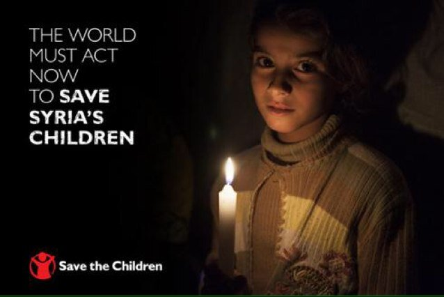
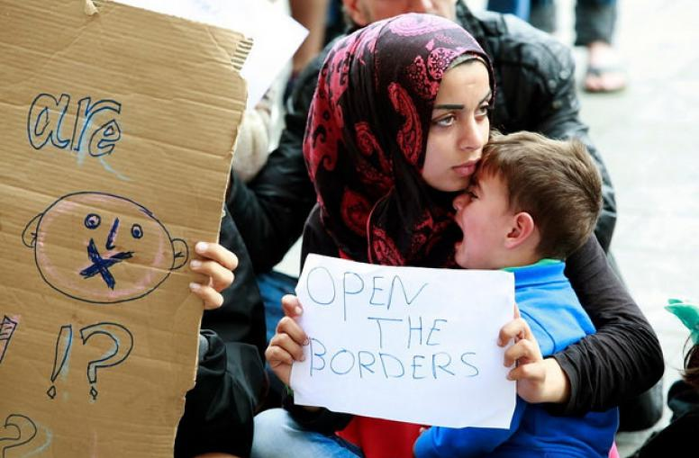
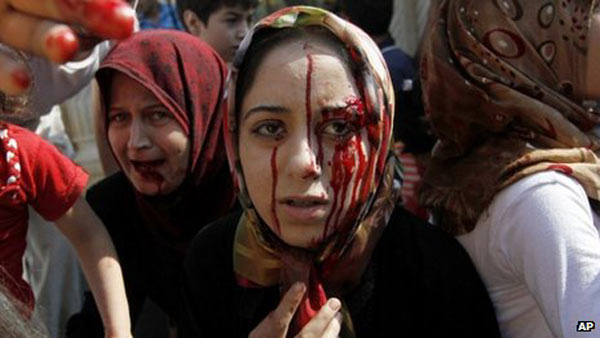

My home in graveyards??
I'm gonna tell God everything
- words uttered by 3-year old syrian boy just before he died.

what's going on in syria???
Tody's news two main places in syria bombed, rassia and america prepared to airstrike in syria, syrian people are migrating to nearest contries for peaceful life. we have often heard these kind of news, so we wonder what's really going on in syria, why this much of terrorism there?
when it all beggins?
Evething was began when the goverment arrested 15 school children for writting antigoverment slogans in 2011, the local people protested on release of the children but the goverment made open fire on protesters that claims some lives of the protesters. This made some people fierce angry over syrian president Bashar Al-Assad, they demanded the resign of president Bashar Al-assad but Bashar denied to resign, then it's kindled the war between some groups who opposing president and the supporters of the president. In July 2012, the International Red Cross said the violence in Syria had become so widespread that it was in a state of civil war.
could you hear my story?
How do you help your brothers and sisters?
yes you can help our brothers and sisters who are really in need for our help, if you have a kind heart you can donate for them or you can pray for them.
Below there are some non-profit organisations doing their best to help the victims of syria, you can also help them by donate them.
Save the children:
Syrian American Medical Society:
The White Helmets:
International Rescue Committee:
situation now in syria?
Now the situation gone worse in syria, inbetween these two, another militant group call himself as islami state in short isis trying to invade in syria. so the contries like america, russia, Uk are attacking these militan groups both in syria and iraq. But eventually all affects only the innocent people of syria.
where we go?

Now the people are trying to find the new home where they can live peacefully without hearing the bullets sound and screaming, so the people are trying to enter the nearest contries like lebanon, jordan, trukey, egypt etc.. and european countries. But these journy is not an easy one,According to the United Nations High Commissioner for Refugees (UNHCR), 4.8 million have fled to Turkey, Lebanon, Jordan, Egypt and Iraq, and 6.6 million are internally displaced within Syria. Meanwhile about one million have requested asylum to Europe
where is my kith and kin?

According to the syrian network for human rights a total of 206,923 civilians were killed by the main influential parties in syria from march 2011 until march 2017, this includes 24,000 children and 23,000 females.
you want more about this?
Here i suggest some websites where you can find more about the syrian wars.